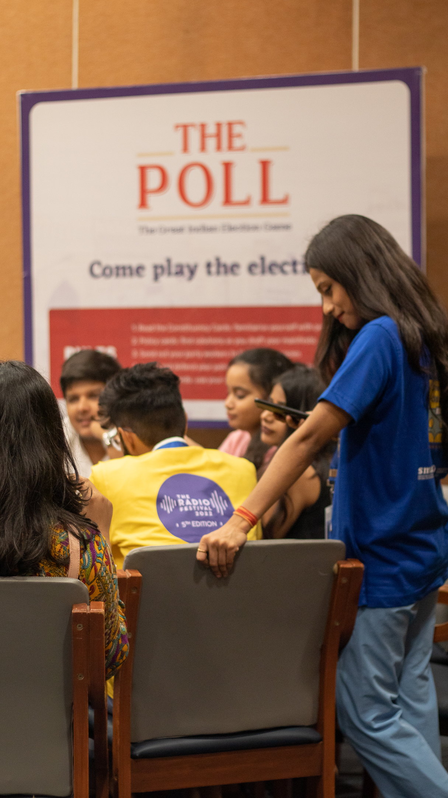

Governance today is taking place in conditions of deep transition. Cities and villages are being asked to plan for climate adaptation, skills, livelihoods, service delivery, and digital transformation — simultaneously, under constraint, with limited room for failure.
Many governance processes still depend on static formats: reports, trainings, consultations, guidelines. These remain important. But they often fail to show how decisions interact with one another over time. Civic Games Lab builds playable decision frameworks that do.
The governance challenge
The problem is not only that governance challenges are complex. The problem is that many decision-making formats do not allow people to see complexity before they act.
Governance actors must now respond to climate shocks, livelihood transitions, service delivery gaps, digital transformation, demographic change, public finance constraints, infrastructure deficits, declining trust, and political uncertainty — often through formats that were designed for a slower, more predictable world.
This is why our games begin by turning governance into something participants can enter. Not observe. Not study. Enter — and make decisions inside.
Players enter electoral politics by reading constituency problems, building manifestoes, defending solutions, and campaigning for support. Democracy becomes a system they are inside — not a concept they are studying.
Players enter a growing city where air pollution, land use, stakeholder agendas, wind direction, and regulation interact. Urban governance becomes a system they must navigate, not a case study they analyse.
Players enter a village planning process where Panchayat members identify problems, understand LSDGs, select solutions, and build a development plan under constraint. Local governance becomes a decision environment they inhabit.
Players take charge of a city's industrial and MSME departments, building a policy framework across finance, skills, infrastructure, entrepreneurship, and innovation — governing the ecosystem that determines whether enterprises start, survive, and grow.
Our approach
We translate abstract public challenges into concrete decision environments made up of problems, roles, resources, constraints, incentives, schemes, solutions, shocks, trade-offs, and consequences.
These environments allow participants to move beyond passive learning. They make decisions, negotiate priorities, test ideas, and see how choices affect a wider system. Across our governance work, the same underlying translation applies — three tools show how the method works at different scales.
Electoral democracy into a system of constituency problems, promises, argumentation, public persuasion, campaign strategy, media influence, and accountability.
Urban air pollution into a system of land use, infrastructure, stakeholder interests, environmental variability, regulation, and city growth dynamics.
Panchayat planning into a system of local problems, LSDGs, central schemes, infrastructure choices, public finance, and collective decision-making under constraint.
MSME and industrial policy into a system of policy instruments, resource tokens, sector trade-offs, enterprise life-cycles, employment generation, and ecosystem interdependence.
The themes differ. The method remains stable.
Our governance methodology
We begin by translating complex governance challenges into accessible systems. Climate risk, air pollution, livelihood insecurity, village planning, electoral promises, public finance, service delivery, and infrastructure gaps are broken down into playable elements — problems, roles, constraints, resources, and consequences.
The purpose is not to simplify complexity out of existence. It is to make complexity legible enough for people to work with.

Constituency problems, manifestoes, campaign resources, media influence, and voter behaviour become the playable elements of electoral democracy.

Pollution, wind direction, city tiles, stakeholder roles, solution cards, and urban growth become the translated system of a city under environmental stress.

Village infrastructure, local problems, LSDGs, schemes, solution cards, budgets, and Panchayat roles become the planning environment.
Participants identify the issues that matter most within a given public system. These may include visible problems — water scarcity, unemployment, pollution, poor roads, waste — and less visible pressures: weak institutional coordination, poor maintenance, gendered labour burdens, low trust, or climate vulnerability.
The goal is not only to list problems, but to understand how they emerge, who they affect, and what happens if they remain unresolved.
Players begin by understanding constituency problems. This teaches that electoral politics is not only about campaigning, but about identifying and responding to public needs.
Players identify village-level problems and connect them to LSDGs, schemes, and possible solutions — turning local planning into a structured problem-solving process.
Air pollution is not presented as a single problem. Players discover how pollution emerges through industrial activity, construction, transport, land use, waste, and regulatory choices — each with a different cause and a different intervention.
Once problems are identified, participants map the ecosystem around them. This includes stakeholders, institutions, budgets, schemes, infrastructure, political incentives, environmental conditions, social behaviour, and implementation bottlenecks.
This stage helps participants see that governance problems rarely sit inside one department, one scheme, or one decision. They are produced by systems — and can only be addressed by understanding those systems.
Players see how a city is not a collection of disconnected tiles, but a living system where one planning choice can affect pollution, growth, liveability, and stakeholder conflict simultaneously.
Village development is mapped as a system of infrastructure, public priorities, Panchayat roles, LSDGs, schemes, and resource constraints — revealing how local problems connect to institutional structures.
Democracy is mapped as a system of problems, promises, persuasion, campaign resources, media influence, and public accountability — making visible the forces that shape electoral outcomes.
Participants imagine the future they are trying to build. This may be a more liveable city, a more resilient village, a more accountable electoral process, a more climate-ready institution, or a more inclusive service delivery system.
Visioning moves the process from complaint to direction. It asks participants to clarify what better looks like — before they begin allocating resources or designing solutions.
The manifesto becomes the vision document. Players must decide what they stand for, which problems they will prioritise, and what promises they will make to voters — committing to a future before they campaign for it.
Players debate what kind of city they want to build: industrial or residential, dispersed or dense, growth-oriented or pollution-controlled. The vision shapes every subsequent planning decision.
Players imagine the future of their village by selecting infrastructure, prioritising development needs, and building a plan that links local aspirations to public investment.



Governance requires sequencing. Participants decide which problems are urgent, which are structural, which are politically visible, which are resource-intensive, and which may trigger larger consequences if ignored.
Prioritisation makes the trade-off visible. It forces participants to confront the fact that public decisions always have opportunity costs — and that sequencing is itself a governance choice.
Players cannot solve every village problem at once. They must choose what to address first, what can wait, and what consequences follow from delay — experiencing prioritisation as a real political and resource constraint.
Political actors must choose which constituency problems enter their manifesto and where campaign resources are deployed — learning that political prioritisation is always a choice about who matters most.
Players must decide whether to prioritise growth, pollution control, stakeholder demands, or long-term liveability — and discover that these priorities are often in direct tension.
Participants connect problems to implementable pathways. Solutions may include schemes, best practices, innovations, line department activities, infrastructure investments, public communication, behavioural interventions, financing mechanisms, or institutional reforms.
The focus is not on abstract ideas. It is on building a practical architecture of action — one that can be sequenced, resourced, and governed.
Players connect local problems to schemes, best practices, innovations, line activities, infrastructure, and LSDG outcomes — building a practical development plan, not a wish list.
Players use solution cards and pollution-response mechanisms to manage urban environmental risk — connecting specific city problems to specific, implementable interventions.
Players convert public problems into manifesto promises and policy arguments that must be defended before others — separating wishful thinking from the architecture of a credible electoral commitment.
Players build a policy framework across finance, workforce, infrastructure, entrepreneurship, and innovation — choosing which policy instruments to sequence and sustain.
Every public decision operates within constraint. Participants work with budgets, staff capacity, political pressure, time, land, infrastructure, community trust, and institutional capability.
They learn that good ideas are not enough. A solution must be resourced, sequenced, maintained, and governed. Resource logic is where planning becomes real.
Players manage money, manpower, media, and campaign presence. They learn that political promises require resources and strategy — that a manifesto without a resourcing logic is not a plan.
Players manage urban growth under environmental pressure. Every city tile, pollution token, and solution choice affects the wider system — making the resource logic of urban planning visible and consequential.
Players build development plans within limited resources — deciding how to allocate funds, infrastructure, and institutional attention across competing local needs.
Policy cards generate tokens — the resources needed to acquire industries and help them grow. Players learn that resource allocation is inseparable from policy sequencing.
The previous stages are converted into a playable decision environment. This may take the form of a board game, tabletop simulation, digital simulator, scenario workshop, live-action exercise, or participatory planning tool.
Inside this environment, participants test choices, negotiate trade-offs, face uncertainty, and see consequences before acting in the real world. The format changes, but the underlying method remains the same: make the system visible, make the choices playable, and make the consequences discussable.
The complete simulation: players govern a city's industrial ecosystem, testing policy choices and watching their consequences play out across a living MSME economy.
Election simulation as decision environment — participants govern voter behaviour, political trade-offs, and campaign choices under real time pressure.
Air quality as a wicked problem — players navigate competing stakeholder interests, resource constraints, and policy trade-offs across a simulated city system.
Village development planning as participatory decision environment — elected representatives and community members co-govern resource allocation and public priorities.
The governance pathway
The issue may change. The scale may change. The format may change. The method remains stable.
Rehearsal is not the starting point of our work. It is what becomes possible once complexity has been translated, systems have been mapped, priorities have been debated, solutions have been structured, and resources have been made visible.
By the time participants enter the final play environment, they are not merely playing a game. They are rehearsing how decisions might unfold inside a public system.
This is where The Poll, Fix It!, Gram Vikas, and Engines of Growth become more than learning tools. They become structured spaces for testing judgement — low-stakes environments where the consequences of a wrong decision are visible, discussable, and reversible.
From tools to scalable methodology
Our games are not isolated products. They are proof points for a larger methodology that can be adapted across governance themes and audiences.
The format can change. The methodology remains stable. It can become a board game, tabletop exercise, digital simulator, scenario workshop, training module, participatory planning process, or decision-support tool.
Active themes have existing tools. Others can be commissioned as bespoke simulations — the same eight-stage methodology applied to a new governance challenge.
What this enables
This is not play as entertainment. It is play as a structured method for making governance more participatory, strategic, and future-ready.
Institutions emerge from the simulation with shared language for complex governance challenges — enabling more precise conversations across departments and stakeholders.
Prioritisation and resource logic make trade-offs discussable before they are made — surfacing opportunity costs that static planning formats leave invisible.
Participants learn to connect problems to schemes, best practices, and line activities — building the practical knowledge that converts plans into implementable action.
Rehearsing difficult decisions in a low-stakes environment builds the analytical and political confidence to act — even under the harsher conditions of real governance.
Decision environments make governance participation meaningful rather than performative — people engage with real choices, not consultations designed to produce consent.
Institutions that engage with simulation develop the habit of testing before acting — a foundation for more adaptive, iterative planning cultures under uncertainty.
Players see how choices affect a wider system — building the systems-level thinking that complex governance challenges increasingly require.
Group decision-making within the simulation strengthens the capacity for collective judgement — the practical skill at the heart of democratic and participatory governance.
We translate your governance challenge into a playable decision environment — built with your communities and institutions, not for them. Full-cycle commission or single-stage engagement.
Start a conversation → Browse all governance games